Editorial y eventos para el SENA
Cuatro años diseñando la comunicación interna y externa de la regional más grande del SENA: periódicos y boletines, infografías, campañas de empleo y el material de WorldSkills Colombia.
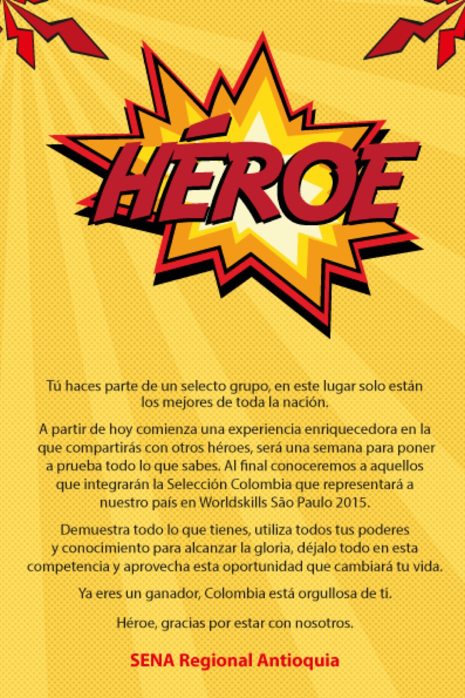
WorldSkills Colombia
Para las eliminatorias nacionales diseñé una tarjeta de bienvenida personalizada para cada competidor, con un lenguaje de cómic: el competidor como héroe. Después, la postal que celebró a los aprendices antioqueños en WorldSkills São Paulo 2015.
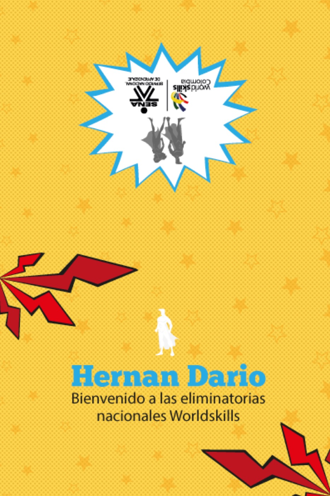
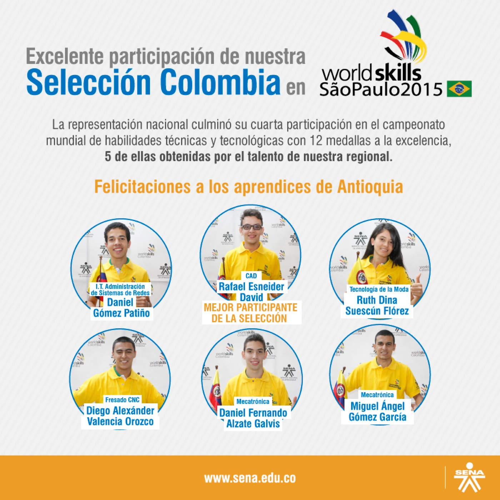
Diseño editorial
El periódico regional y los boletines quincenales con retículas de varias columnas, secciones fijas y jerarquía de noticias. Un oficio que hoy aplico a los one-pagers y e-books.
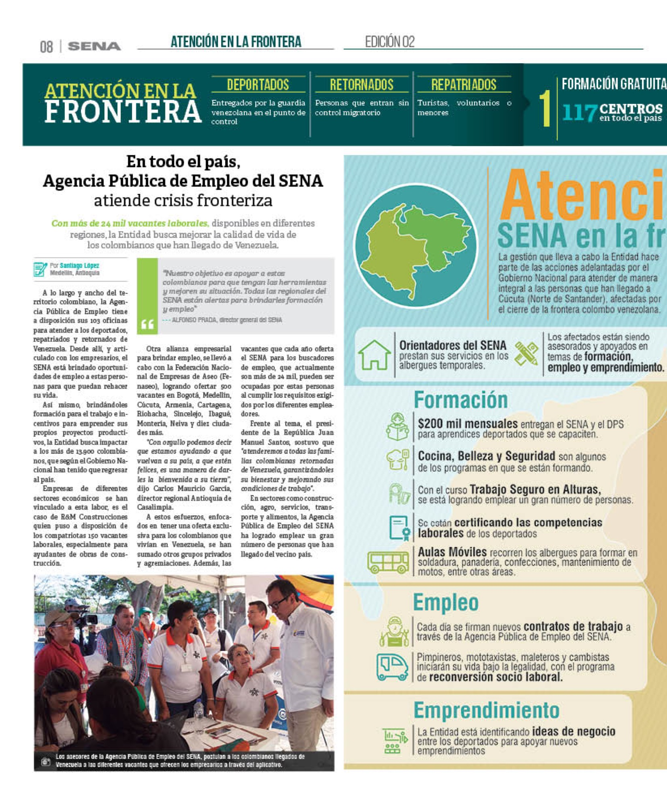
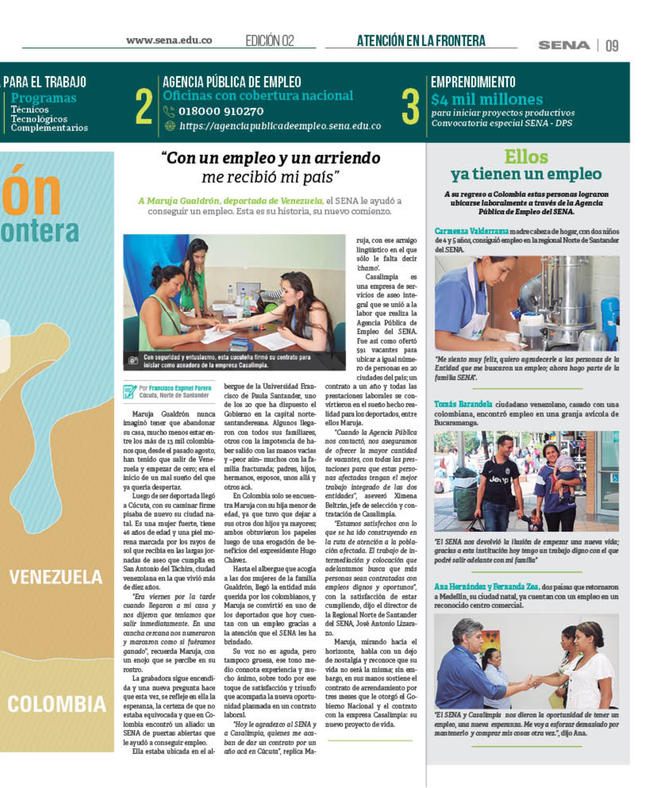
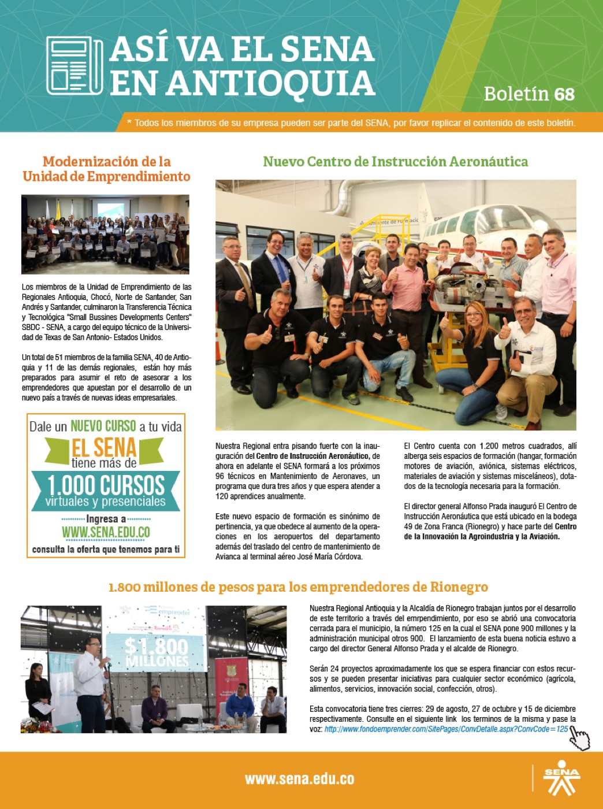
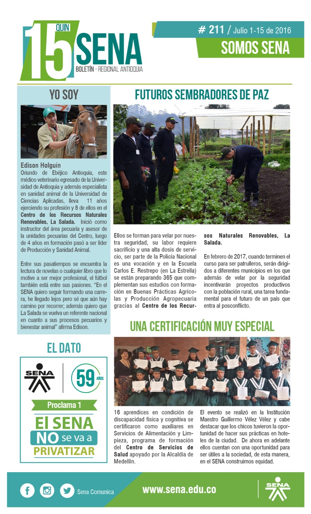
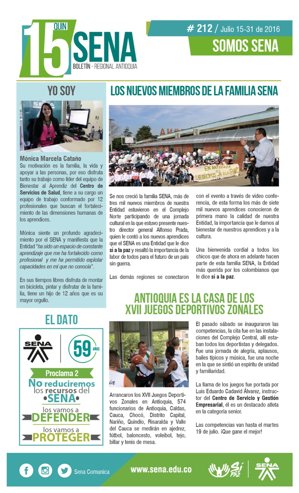
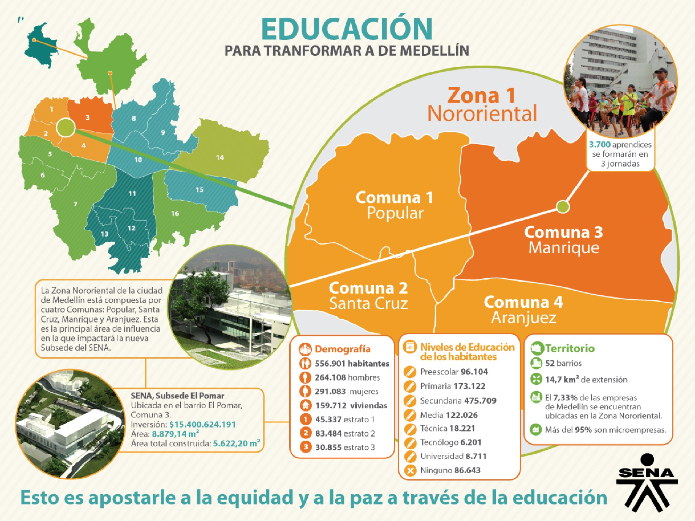
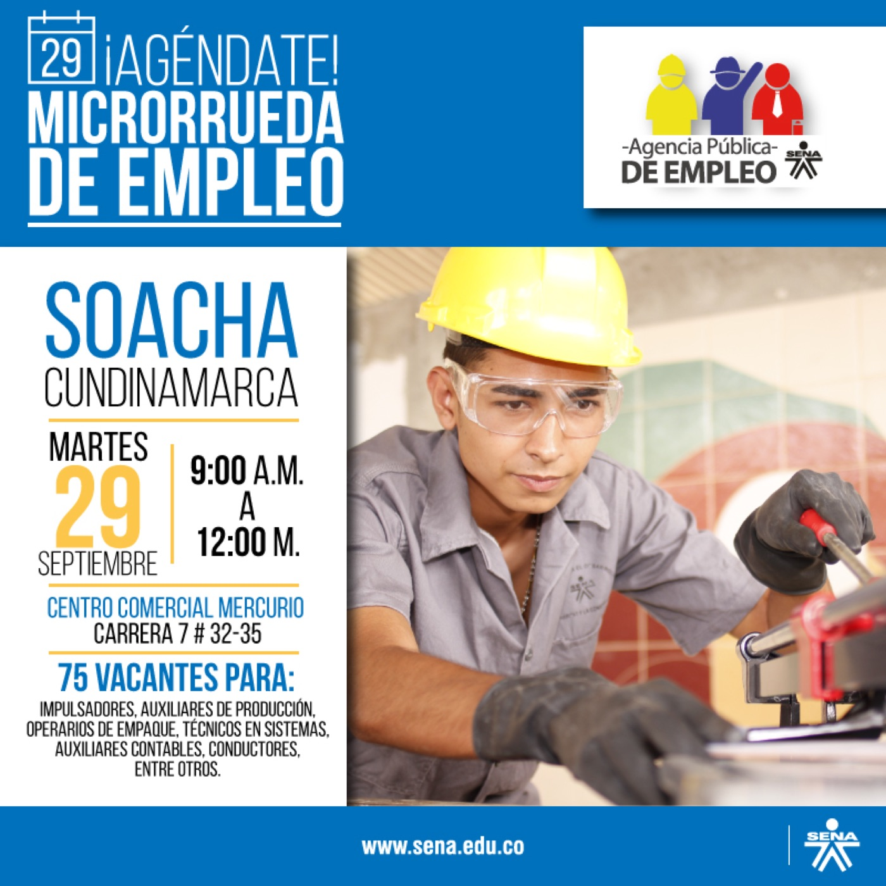

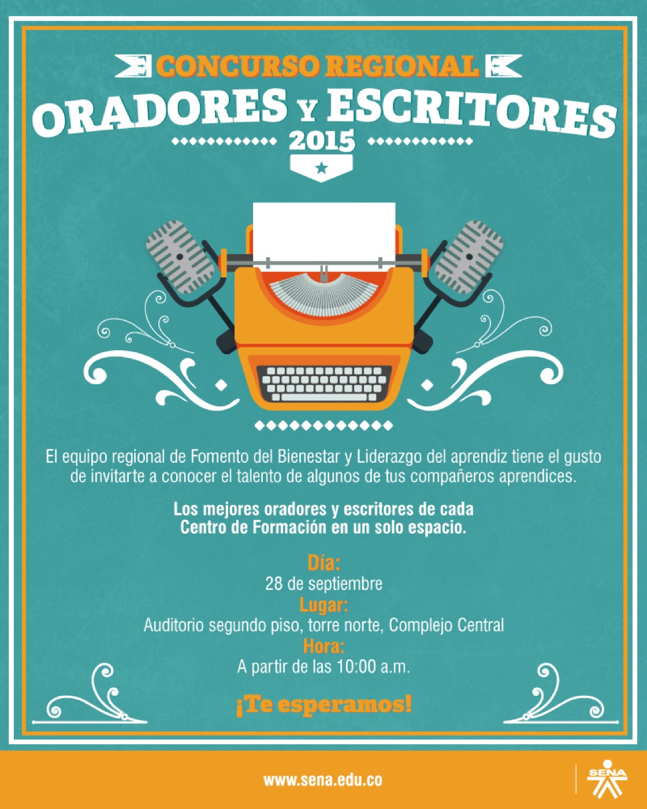
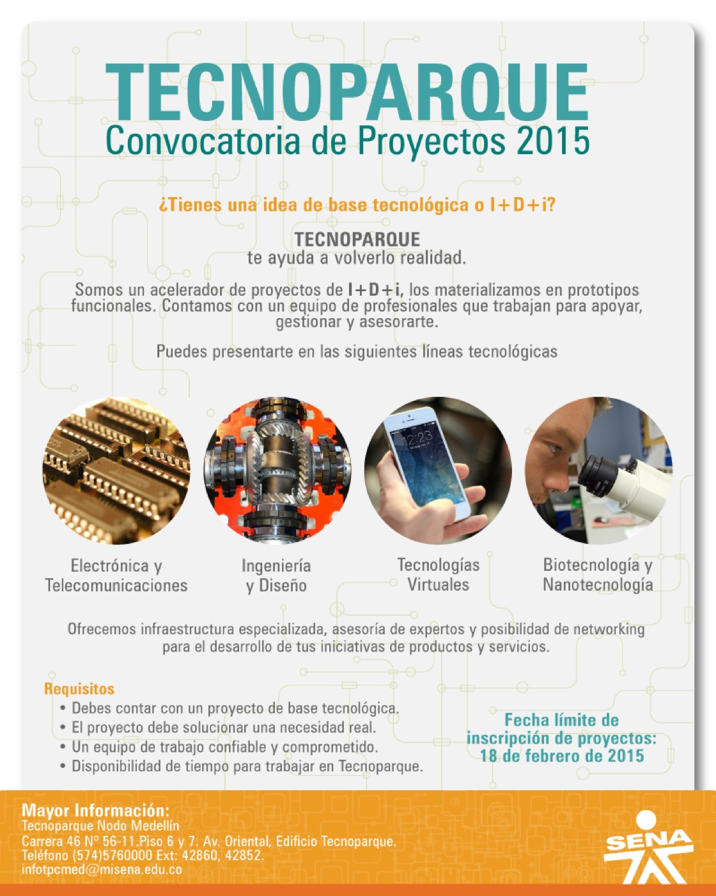
Archivo: cada afiche, una idea
Ver caso